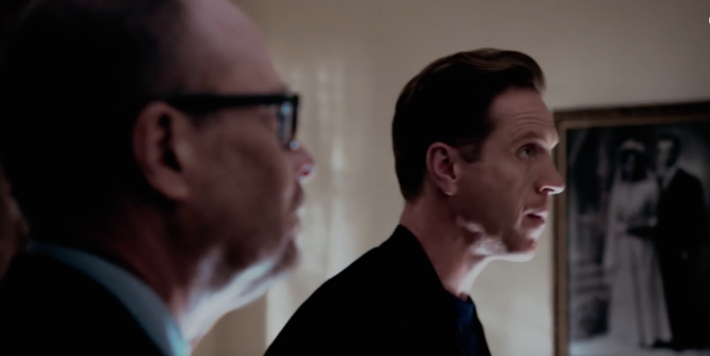

01
布鲁诺家 → 马可办公室 · 深夜
先找出，是谁把他带进这笔交易

剧情事实赌场牌照落空后，阿克斯与霍尔深夜闯访布鲁诺，转去盘问其侄马可是否拿钱设局。马可否认，认为他们卷入的是奥尔巴尼政治机器的运作，并称最初没人知道他找谁融资。阿克斯承认自己也曾核过消息；霍尔仍继续调查，没有当场找到马可收钱的证据。[1][2]
这一场为什么重要 · 个人解读
开局的愤怒把商业损失转成背叛问题，仿佛只要找出坏人，就能解释风险为何发生。马可提出另一种可能：并非专门针对他们，权力网络里的变动也会伤及旁人。阿克斯暂时不接受这种无对象的解释；霍尔的威吓与布鲁诺的在场，让信任首先由较弱的一方承担压力。
因此 → 追责没有给出答案，阿克斯仍须面对债券失去偿付前景的现实。